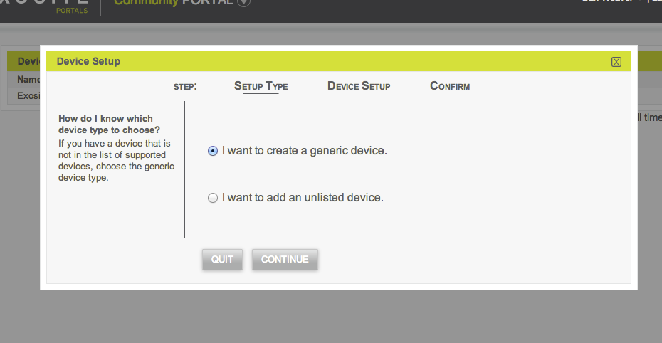
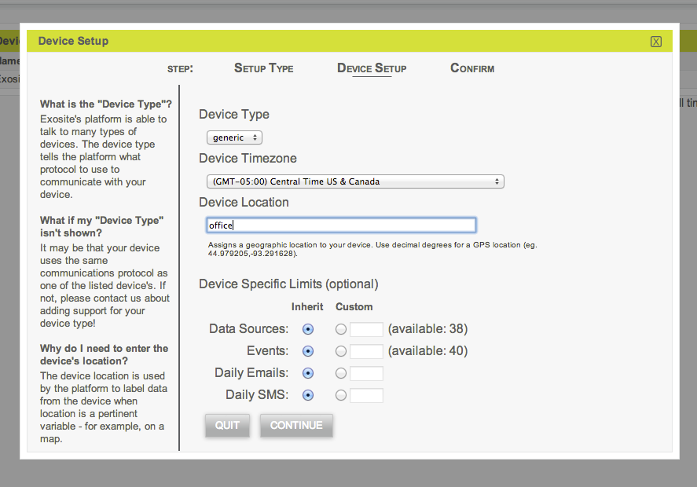
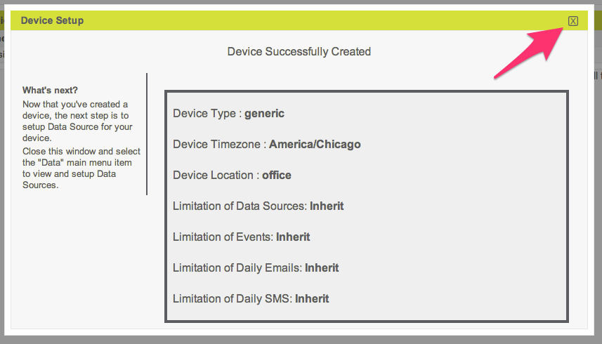
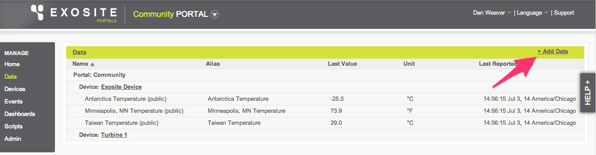
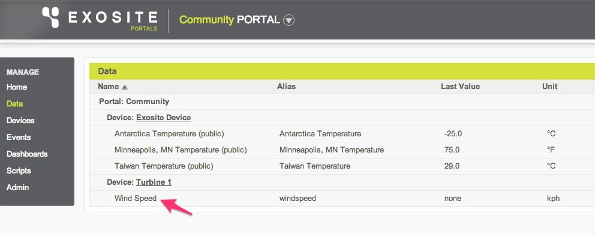
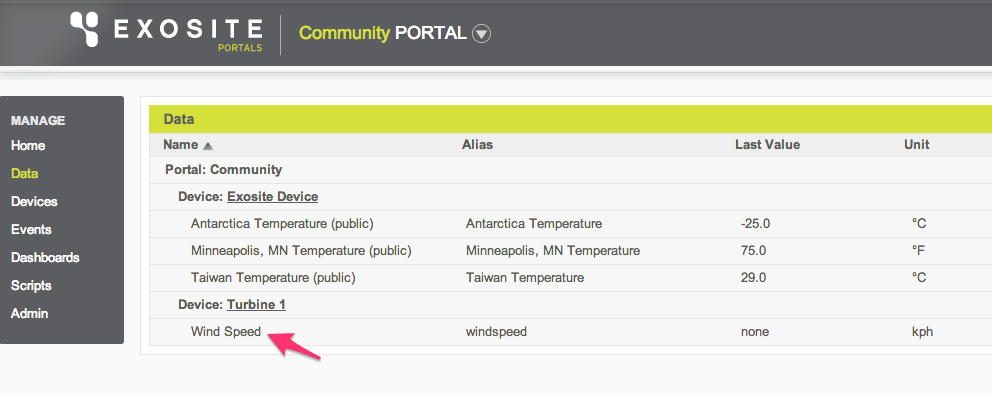
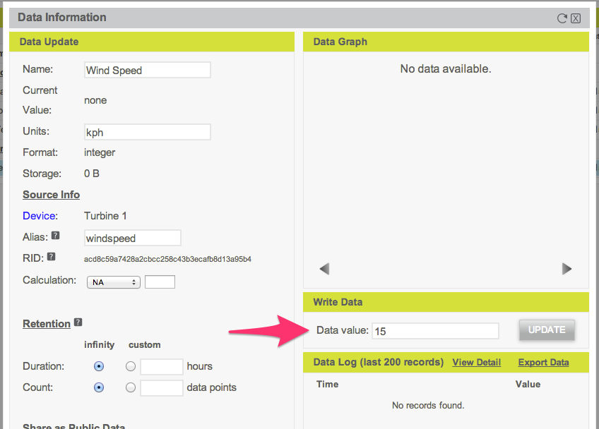
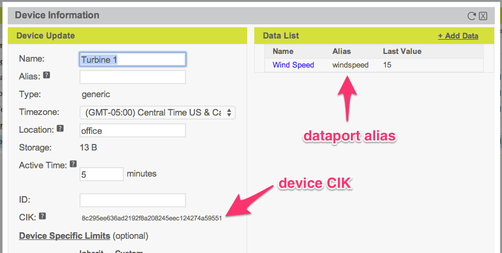

Get Started with the Portals Evaluation App
This tutorial will explain how to set up a free Portals™ account, create a hypothetical device and associated dataport, send data to that hypothetical device, and display that data in a widget on your dashboard homepage.
Prerequisites
Computer with an Internet connection
Active email address
NOTE: A physical device will not be used in this tutorial and is not necessary for the completion of the procedures herein.
Create a Portals Account
To begin, you will need to create a Portals account. If you already have an account, you can proceed to the "Create a New Device" section of this document.
- Point a web browser to Exosite’s Account Sign Up web page.
- Complete the form and click Create Account.

- You will receive an email from portals.exosite.com that asks you to activate your account. Click on the appropriate link in the email to activate your account.
- When complete, log in to your account on the Portals login page using your email address and the password you just created.
 You should now see your Portals community account dashboard homepage.
You should now see your Portals community account dashboard homepage.

Below are descriptions of the main features of the Portals dashboard homepage, as shown in the figure above.
- Portal menu - Provides links to manage features of the devices in the selected portal.
- Portal name - Identifies the portal you are currently viewing. Your new community account is the default portal that opens when you log in. If you have access to another user’s portals, click the arrow beside your portal name to access them.
- Dashboard name - Identifies the dashboard you are currently viewing. Dashboards are a customizable view of a portal.
- Main menu - Provides a top-level menu to access the home page, view your account information, or log out.
- Widgets - Three widgets appear on the dashboard by default. The Welcome widget describes how to use your account. The Portal Data Source List widget displays a list of data sources for the default "Exosite Device" automatically created for you with your account; the data sources are current temperature readings from Antarctica, Minneapolis, and Taiwan. Finally, the Gauge widget displays the current temperature in Antarctica.
- Help and feedback - Allows you to search Exosite’s knowledge base for helpful articles or contact Exosite directly for support.
Create a New Device
Now that you have a Portals account, you will create a new device in your portal. For the purposes of this tutorial, this device will be a hypothetical wind turbine to which you can write wind speed data.
- Select "Devices" from the Portal menu to display a list of the devices in your portal.

- On the Devices page, click "+ Add Device."

- A Device Setup window will open. On the Setup Type tab, select the radio button labeled "I want to create a generic device." Click Continue.  A generic device is one that does not follow a pre-existing model; in other words, it is a device you set up from scratch. Since you want to define what data will go in the device you are creating, choose this option. NOTE: Generic and unlisted devices are both private. The term "unlisted" here indicates that you want to add a device based on a model that is unlisted. For example, you would choose an unlisted device if you had a hardware development kit that already had a model name created on Exosite. In this case, the manufacturer would provide you with an unlisted model identifier created specifically to work with the kit’s firmware.
- On the Device Setup tab:
- Ensure the Device Type drop-down menu is set to generic.
- Select your timezone from the Device Timezone drop-down menu.
- Enter a location in the Device Location field. The location can be anything that indicates the device’s location, but it cannot be left blank. In the example below, the location is set to office.
- Under the Device Specific Limits heading, you can restrict a device’s resource consumption. For this example, select the radio button labeled "Inherit" for each option, which allows the device to use as much of its parent portal’s resource limits as it needs. The “Custom” setting might be used, for example, to ensure that an SMS alert limit is shared equally among devices in a portal.
- Click Continue. 
- On the Confirm tab, enter a name for your device in the New Device Name field. Since this device will be a hypothetical wind turbine, it is named Turbine 1 in the example below. Click Submit.

- You should see a Device Successfully Created message. Click the "x" in the window to return to your device list.

You should now see the device you just created on the Devices page. To view pertinent information about the device, click on the device to open the Device Information window.

Create a Device Dataport
In order to write data to the wind turbine device you just created, you first need to create a dataport to contain the data. A dataport contains a series of time-stamped points and can live inside a device or a portal.
- Select "Data" from the Portal menu to display a list of all the devices in your portal and their associated dataports. NOTE: Portals may refer to dataports as data sources. The term dataport and data source refer to the same thing and can be used interchangeably.
- On the Data page, click "+ Add Data." 
- A Data Setup window will open. On the Origin tab:
- Select the radio button labeled "From a Device" since you are adding a dataport for the device you just created.
- Select the wind turbine device from the drop-down menu.
- Click Continue.
 NOTE: The other origin options are out of the scope of this tutorial, but deserve a brief explanation. Select "From Existing Data" to combine the data from other dataports to a device in your portal. Select “From Shared Data” to echo whatever is in a dataport; you need a share code for the other dataport to do this (this is how the default “Exosite Device” works with temperatures from Antarctica, Minneapolis, and Taiwan). Finally, select “From Public Source” if you want to search for and use data from another dataport that has been made public.
NOTE: The other origin options are out of the scope of this tutorial, but deserve a brief explanation. Select "From Existing Data" to combine the data from other dataports to a device in your portal. Select “From Shared Data” to echo whatever is in a dataport; you need a share code for the other dataport to do this (this is how the default “Exosite Device” works with temperatures from Antarctica, Minneapolis, and Taiwan). Finally, select “From Public Source” if you want to search for and use data from another dataport that has been made public.
Since a wind turbine can tell you the wind speed at a given time, you will make that the first datapoint. In the Configuration tab:
- Enter Wind Speed in the Data Source Name field. This is a name that widgets can use to describe the data in this dataport to dashboard users.
- Select integer from the Data Source Format drop-down menu. This indicates the format of data (integer, float, string, binary) that will come from the device.
- Enter kph in the Unit field. This indicates the type of measurement for the data. In the example below, the wind speed will be measured in kilometers per hour.
- Enter windspeed in the Alias field. This s the name devices will use to identify this dataport when accessing Exosite’s application programming interfaces (APIs).
Click Submit.

You should see a Data Source Successfully Created message. Click Quit to return to your dataport list.
 You should now see the dataport you just created on the Data page.

You should now see the dataport you just created on the Data page.
- Select "Home" from the Portal menu to return to the dashboard homepage.

You may notice that the dataport you just added is not listed in the Portal Data Source List widget; that widget has not been configured to display this dataport. Click the arrow in the corner of the widget and select Edit to add the dataport.

Select the checkbox for the new dataport in the Data Sources list. Leave the Selectable, Set Caller, and Refresh Rate fields at their defaults. Click Save.

You should now see the dataport value listed in the Portal Data Source List widget on your dashboard homepage.

Read and Write Data
Use Portals
Now, you will add wind-speed data for the turbine using Portals.
- Select "Data" from the Portal menu and click the Wind Speed dataport you just created.
- In the Data Information window, you will see that the new dataport is empty. In order to write data to a device, enter a value in the Data value field. For this example, enter 15 and click Update. 
- You should see a Data written successfully message. Click the "x" in the upper right corner of the window to exit.

- Select "Home" from the Portal menu to return to the dashboard homepage. You should now see the value you just wrote to the Wind Speed dataport in the Portal Data Source List widget.

This method of writing data from within Portals is generally only used for debugging during development.
Use APIs
Basics of API Access
This section explains how to write data to Exosite from an external device using an API. Note that this process is optional and will require installing at least one program, as well as entering commands at the command prompt. If this doesn’t interest you, you can proceed to the "Dashboards and Widgets" section of this document.
Exosite provides several APIs that allow access to data and device information from a variety of firmware platforms. In order to access an API to make calls to read and write datapoints in a device’s dataport, you must identify the device’s Client Interface Key (CIK) and alias using the steps below.
- Select "Devices" from the Portal menu and click on the turbine device on the Device page.
- In the Device Information window that appears, find the device CIK and dataport alias. In the example below, the device CIK is 8c295ee636ad2192f8a208245eec124274a59551 and the dataport alias is windspeed.  Now that you have the CIK and dataport alias, you can use Exosite APIs. Writing firmware to use the API from a piece of physical hardware is out of the scope of this tutorial, but the information below will discuss two ways to access these APIs from your computer’s command line.
Read and Write with cURL
cURL is a command line tool that may be used to generate HTTP requests. Read and write commands for the Exosite API can be called with cURL.
Mac/UNIX/Linux: cURL is already installed on most Mac or UNIX/Linux systems. To open a command line window, press ⌘ + Spacebar, type terminal in the Spotlight search bar, and select Terminal from the list.

Windows: Windows users who are not already familiar with cURL may want to skip to the "Read and Write with Exoline" section below. However, you can download cURL by entering information about your version of Windows on the cURL Download Wizard web page. Once cURL is installed, select Start > All Programs > Accessories > Command Prompt to access the Windows command prompt.

Use the command below to write a new wind speed of 11 kilometers per hour to the turbine device. NOTE: Enter the bold characters at the command line; be sure to replace YOUR_CIK_HERE with the CIK for your device.
$ curl http://m2.exosite.com/onep:v1/stack/alias -H "X-Exosite-CIK: YOUR_CIK_HERE" -H "Accept: application/x-www-form-urlencoded; charset=utf-8" -d "windspeed=11"
Use the command below to read back the latest wind speed from the turbine device. Again, be sure to replace YOUR_CIK_HERE with the CIK for your device.
$ curl http://m2.exosite.com/onep:v1/stack/alias?windspeed -H "X-Exosite-CIK: YOUR_CIK_HERE" -H "Accept: application/x-www-form-urlencoded; charset=utf-8"
windspeed=11
Read and Write with Exoline
Exoline is a command line tool that works with Exosite’s services. Exoline provides access to a wide range of APIs that are possible with cURL, but Exoline provides a less verbose syntax. Exoline supports most platforms, including Linux, Mac, and Windows. Refer to the Exoline Installation Instructions for additional information.
Mac/UNIX/Linux: To open a command line window, press ⌘ + Spacebar, type terminal in the Spotlight search bar, and select Terminal from the list.

Windows: To access the Windows command prompt, select Start > All Programs > Accessories > Command Prompt.

Use the commands below to write and read values from the turbine device. NOTE: Enter the bold characters at the command line; be sure to replace YOUR_CIK_HERE with the CIK for your device.
$ exo write YOUR_CIK_HERE windspeed --value="12"
$ exo read YOUR_CIK_HERE windspeed
2014-07-03 18:14:02-05:00,12
Use the command below to see the tree of the turbine device. Again, be sure to replace YOUR_CIK_HERE with the CIK for your device.
$ exo tree YOUR_CIK_HERE
Turbine 1 client cik: 8c295ee636ad2192f8a208245eec124274a59551 (aliases: see parent)
└─Wind Speed integer dataport rid: acd8c59a7428a2cbcc258c43b3ecafb8d13a95b4 (aliases: ["windspeed"])
In the output above, you can see both the Turbine 1 device and Wind Speed dataport you created, as well as the hierarchical relationship between them - the dataport is "inside" the device. The Exosite One Platform™ stores domains, users, portals, devices, and dataports in a hierarchy, and Exoline’s tree command can show you those relationships.
If you would like to see more of the hierarchy, visit your Portals web page and use the key for your portal instead of the device CIK with the Exoline tree command. The tree command lets you explore this hierarchy, which is important for mobile and web application development in the platform.
Customize Dashboard and Widgets
Now that you have a datapoint written to the Wind Speed dataport, you can create a widget to capture that information on your dashboard homepage.
- Select "Home" from the Portal menu to return to the dashboard homepage.
- Click "Add Widget" to add a new widget.

- An Add widget window will open. On the Type tab:
- Select Big Number in the Widget Type drop-down menu; this is a widget that displays a large numeric value that is suitable for a dashboard. There are many predefined widgets to choose from. You can also select Custom Widget to develop your own.

- Enter Wind Speed in the Block Title field. This title will be displayed at the top of the widget on the dashboard homepage.

- Click Continue.
- Select Big Number in the Widget Type drop-down menu; this is a widget that displays a large numeric value that is suitable for a dashboard. There are many predefined widgets to choose from. You can also select Custom Widget to develop your own.
On the Config tab, you can configure many features of the widget. With the Big Number widget, you can change the size of the widget itself (measured in grid units within your dashboard; the entire dashboard is four grid units wide), the dataport to display, and the amount of data that may be configured. You can also configure the widget to refresh.
- Under the Widget Size heading, set the Width and Height to 2 grid units.
- Under the Data Source heading, select the checkbox for your dataport.
- Under the View Data By heading, select the radio button labeled "Count." The count number indicates the number of datapoints that should be displayed by the widget. For this example, enter 1 in the field.
- Enter 5 seconds in the Refresh Rate field. This indicates how often the widget will fetch new data.
Click Submit.

You should see a Widget added successfully message. Click Quit to return to your dashboard.

Your dashboard should now look similar to the example below. By default, the new widget occupies the first empty space on the dashboard. You can use the move tool to drag the widget into a more prominent position on your dashboard.
 Notice that the Big Number widget reports data using the units you specified when you set up the Wind Speed dataport. It also reloads based on the refresh timing you set. You can use cURL or Exoline to write data and the widget will automatically update the number it displays when it reloads.
Notice that the Big Number widget reports data using the units you specified when you set up the Wind Speed dataport. It also reloads based on the refresh timing you set. You can use cURL or Exoline to write data and the widget will automatically update the number it displays when it reloads.
What’s Next?
You have created a free Portals community account, created a hypothetical device and associated dataport, written to that dataport from Portals, written to that dataport from outside Portals using the same API a device would use, and set up a widget to display that data.
Devices in the real world often have more dataports, require some processing of their data, or must send notifications to the users of the system. You may also be ready to start writing firmware to make your product communicate with the cloud. Exosite provides support articles on each of these topics, as well as libraries and sample applications for a variety of languages and hardware platforms.